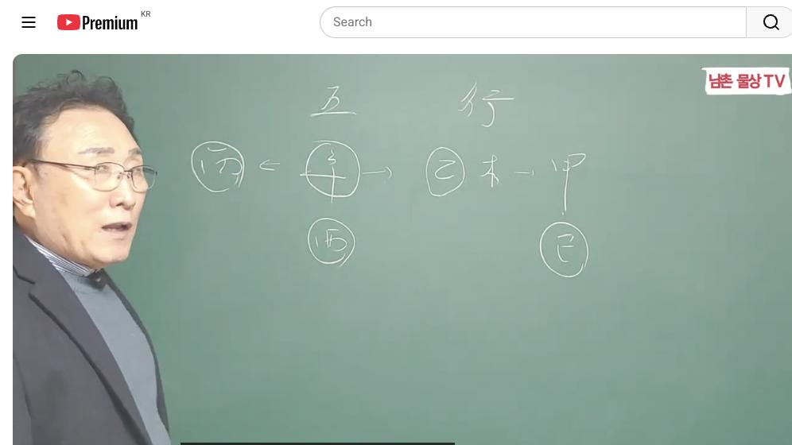
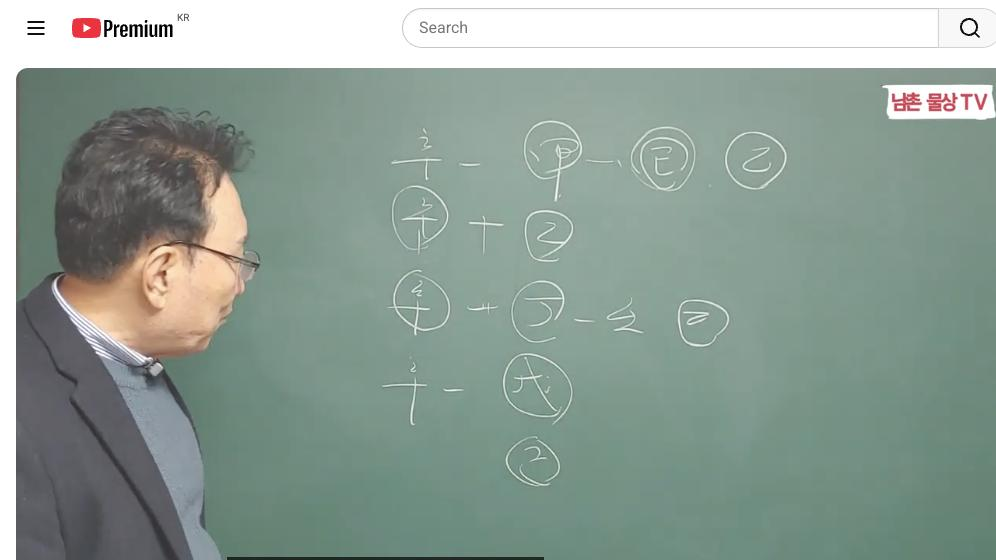
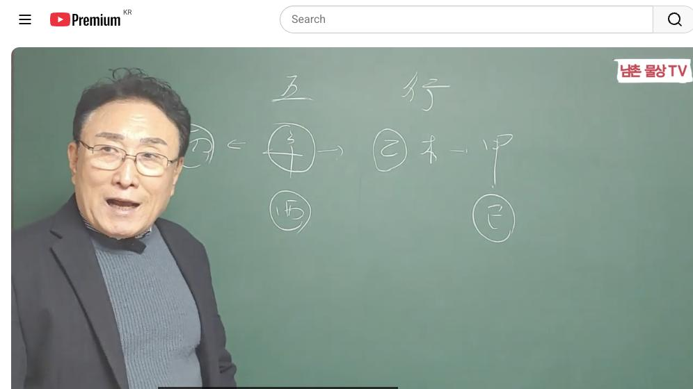

남촌물상TV 전체 문서 › 동영상 V0048
[기본원리]20강 신금 일간에게 꼭 필요한 기가찬 운세 활용 방법은? 상담문의 : 010-3139-6645

| 문서 번호 | V0048 (동영상) |
|---|---|
| 영상 URL | https://www.youtube.com/watch?v=DYh9h0KedN0 |
| 영상 ID | DYh9h0KedN0 |
| 게시일 | 2024-02-12 |
| 길이 | 22:58 (1378초) |
| 조회수 | 2,634회 (수집 시점 기준) |
| 카테고리 | Howto & Style |
| 자막 | ko (자동생성) |
| 수집 시각 | 2026-08-30 19:08 (KST) |
영상 설명 (YouTube 설명 원문 그대로)
[기본원리] 신금 일간에게 꼭 필요한 기가찬 천간 운세 활용 방법은? #기본원리 #신금일간 #운세
전체 자막 (489구간 · 타임스탬프 클릭 시 해당 장면으로 이동)
[0:01][음악]
[0:07]자 안녕하세요 어이 시간에는 오행
[0:11]중에서도 이제 그 신금에 대한 설명을
[0:14]드리겠습니다 자 오행 중에서도
[0:19]금이라 자 신금을 가지고 설명을
[0:23]드리겠습니다 우리 물상의 신금은 아까
[0:25]큰 칼은 경금 작은 칼은 금이라고
[0:28]했어요 그은 칼의 칼자루는 을목이
[0:32]칼자루가 필요하겠죠 을목 작은 을목
[0:36]그래서 작은 칼자루를 작은 칼을
[0:38]움직인다 아하 신기하기도 하죠 그
[0:41]말은 뭔
[0:42]얘기냐 작은 칼을 찾는자는 용도가
[0:45]굉장히 많다 얘기예요 그래서 작은
[0:48]칼은 쓴 용도가 집안에 쓰는 칼도
[0:50]뭘까요 집안에 쓰는 칼도 제 뭐 부칼
[0:54]뭐 무슨 칼 굉장히 가도 있고 여러
[0:57]종류 있잖아 작은 칼 쓰는 용도가
[0:58]굉장히 많아 큰 칼은 소 잡고 도끼
[1:01]잡는데지지만 작은 칼은 용도가 굉장히
[1:04]많다 자 그럼 의사도 잡는 매스 잡는
[1:06]의사 또 뭐 뭐 여러 가지 있잖아요
[1:09]간호사 뭐 이런 거 다 그래서이
[1:12]신금이 자체는 금일 주는 좀 성격
[1:16]자체가 하죠 작은 칼이기 때문에 작은
[1:19]칼이 잘 들어요 큰 칼이 잘 들어요
[1:21]작은 칼이 리하 잘 들잖아요 그래서
[1:24]성격 자체가 굉장히 에대한 사람들이
[1:26]많아 그래서이 신금 일주는 보통
[1:29]표현할 때 성격이 좀 까탈스럽게 이런
[1:32]사람이 성격이 소주라고 보면 된다 그
[1:34]말입니다 자
[1:37]그러면 신금 일주가 큰 재물의 욕심을
[1:41]가지면 어떻고 어떤 위치가 된 거를
[1:44]먼저 설명을 드리겠다 그럼 지금 을목
[1:47]갑목의 두 가지 재물이 있겠죠
[1:50]그러면이 신금과 갑목의
[1:54]관계는 큰 나무에 작은 칼이 끼어져
[1:58]있는 상태 그러니까 결과적 내가
[2:01]직접적인 재물을 취하지 않고 남의
[2:03]재물을 취하게 해 주는 역할
[2:07]식기에서 창으로 생각하면 이해가 쉽다
[2:10]큰 칼자 칼 자루는 난데 회사 갑목이
[2:15]큰 자루가 흔들면 결과적으로 나는
[2:18]칼날 역할밖에 안 되는 거예요 그래서
[2:20]조직 생활이 좋은데 그 말이지 그럼
[2:23]조직 생활도 어떻게 하겠냐 쉽게 큰
[2:26]칼로 바로 내 밑에는 못 잘라지고
[2:27]내것은 잘 안 해 그래서 큰 과 신금
[2:31]사업을 하면 된다 안 된다 안 된다
[2:34]간단하게 이해가 될 수 있어요
[2:36]그래서이 목과 신금의 관계 금의
[2:39]관계로 신금의 관계로는 사업성의
[2:42]기질로서 맞지 않는게 감옥이다 보시면
[2:45]돼요 그러면 만약에 그럼 목 평생
[2:48]나는 사업 못 하겠네 그런 사업도
[2:50]있을 거 아니에요 근데 사업은 해야
[2:52]되는데 때가 와야지 그럼 어떻게 저
[2:56]목이 뭘 바뀌야 될 거 아닙니까 작은
[2:58]칼 그러 자 에서 기토가
[3:02]온다면 기토가 각기 합으로 해서
[3:05]을목이 된다면 그 말이지 그때는
[3:07]사업을 해도 되는
[3:09]거예요 자 그러면 어떤 사업 이렇게
[3:12]어떤
[3:14]사업음 여기에서 생각 볼 때 여기에
[3:18]신금이 뿌리
[3:20]유금이 유금 금이라는 것은 쉽게
[3:23]기해서 먹는 거 어떤 기술적인면 이런
[3:27]관계에서 뭐 여자가 레이아트 뭐 이런
[3:29]것도 있잖아
[3:30]커피숍 이런 것도 있 수 있고 이런
[3:33]관계성의 일을 하면 된다 그 말이에요
[3:35]그때 사업을 할 수 있다 그게 우리는
[3:38]갑목과 신금이 관게 사업하면 안 돼요
[3:40]그러니까 무 안안 된다는게 아니라
[3:43]때가 있다 모든 사람은 삶에 때가
[3:45]있듯이 그때를 벗어나면 안 돼 그래서
[3:49]갑목이 온다는 대원에서 온다 10년이
[3:51]온 거예요 10년 동안에 사업할 수
[3:53]있고 갑을이 쉽 20년 동안 운이 올
[3:57]때 사업을 해도 좋다 이렇게 하는
[3:59]거예요 음 그래서 사업을 나는 절대
[4:02]못 해 이런 관념을 버리시고 사업도
[4:06]할 수 있지만 치게 원 자체 본다면
[4:10]조직 생활 성향이 더 강하다고
[4:12]이해하시기 좋다 이게 특징이에요 자
[4:15]그래서 갑목의 관계는 이렇게 볼 거고
[4:18]을목의 관계는 자기의 작은 칼자루
[4:21]아니에요 작은 칼자루 그러면
[4:24]자 작은 재물이 그래서 신금의 재물은
[4:28]큰 재물의 부자가 별로 없어요
[4:30]그래서 칼 잡는 의사
[4:33]변호사 판사 다 이사하면 사자돌
[4:36]님들이 그 그을 쓰는 직업들이 많은데
[4:40]그 사람들이 재벌
[4:42]없습니다 무토 줄 사람 재벌이 많지
[4:46]신금 일주가 재벌이라는 건 별로
[4:48]없어요
[4:49]왜 작은 칼로서 작은 을목의 재물이
[4:53]때문에 큰 재물이 없다 그러면 자
[4:55]변호사 돈 잘 벌어요 돈 잘 번다 높
[4:58]그때는 뭐예요 높을 새롭 크게 합했을
[5:02]때 돈이 되는거다 그 말이에요 그렇지
[5:04]개인적인 변호사로서 돈을 번다 못
[5:07]벌어 의사 돈 벌어 봐야 종합병 해야
[5:10]돈이 버는 거예요 개인병원 해봐야
[5:12]먹고 사는 거야 그래서 사자 돌림을
[5:14]쓰는이 신금은 결과적으로 큰 재물은
[5:18]크게 없다 욕심 부리지 마라 적당하니
[5:20]가지고 상겨 줬다 돈을 더 보려면
[5:22]변호사는 높음을 만들어야 될 것이고
[5:25]의사는 종합병원을 만들어야 된다 그
[5:26]말이야 이런 과정을 쉽게 이해할 수가
[5:29]있어야 되
[5:32]그러면 성향은 어떤 것이냐 성향 자
[5:35]성향이라 것은 병화는 뭘 구해요 화
[5:38]신구 뭘 끌 병화를 끌고
[5:40]오죠 자 병화를 끌고 온다는 얘기는
[5:44]관의 욕심이 많다 그럼 신금 주들은
[5:47]어떤 선 남편이 벌어다준 걸 먹고 사
[5:50]길 좋아해 제가 돈 벌고 싶 해
[5:52]당연히 사람마 다 똑같다고 하지 뭐
[5:54]여자 남편면 좋겠죠 하는데 금주의
[5:58]성향은 편이 돈 벌어줄 때는 가만 앉
[6:03]먹고 살아 일 안해도 돼 근데
[6:05]남편하고 이혼하거나 결과적으로 어떤
[6:08]남편이 회사를 그만두거나 할 때는
[6:11]본인이 돈을 버려야 팔자라고 보시면
[6:13]된다 그 말이야 그래서 좋은 것도
[6:16]있지만 단점도 있다 어떤 행위에
[6:18]따라서 달 운에 따라서 다 만약에
[6:22]운에서 재운이 쭉 여자가 안 왔어요
[6:25]재이 안 오다가 갑자기 한 4
[6:27]50대가 재이 온다 그 말 무슨
[6:29]얘기냐 내가 돈을 벌려야 된다는
[6:31]관점은 가정이 깨지거나 결과지 문제가
[6:34]있다고 얘기하시면 된다 간단합니다
[6:36]그래서 그런 관계로 이해하시면 좋다고
[6:38]보시면 돼요 그 앞으로 이제
[6:42]여러분들이 지금이 신금의 관계 재
[6:45]관에서 설명을 우선적으로 쭉 드렸어요
[6:48]그래서 이런 신금이 하는 행위와
[6:50]신금이 어떻게 해야만이 먹고 사는
[6:53]방법이 뭔가도 설명을 드렸다 자 그러
[6:56]이제 관의 관에 대해서 서 설명을
[7:00]드리겠습니다 자
[7:04]그러면
[7:06]자 신금에 갑목의
[7:10]관계 감목 한 설명을 드렸죠 방금
[7:13]갑목은 쉽게해서 큰 내 재물이 내가
[7:18]취할 수 없는 재물이 때문에 조직
[7:20]생활이 좋다 설명을 드렸어요 그럼
[7:22]쉽게 신금 일주가 갑목이 운에 오거나
[7:26]내가 관계가 있다면 뭘 하면 좋 건데
[7:29]그 말하니
[7:30]조직생활 해라 근데 조직생활 하기
[7:33]싫어요 그럼 어떻해 운에 봐라 운을
[7:37]보고 대운에서 갑 을로 왔을 때 갑
[7:40]을로 왔을 때 20년간 재운이 올
[7:42]건데 어떤 이때는 뭐요 기토가 와서
[7:47]갑목을 목으로 만들 때를 얘기하는거다
[7:50]목으로 만들 때 그러면 시 잘
[7:54]보세요 기합을 한다는 얘기는 뭐예요
[7:56]기 을목을 만든다 얘기 기합 토지
[7:59]전에서는 근데 우리 을목이 을목 자
[8:02]그러면이 행위를 하지 않으면 너는
[8:05]사업을 하면 안 돼 그 말이에요
[8:07]그러면 자 기토 가피 합을 했다는
[8:10]얘기는 무 무슨 관계냐 그 말이지
[8:12]무슨
[8:14]관계 자
[8:16]그러면이 갑목이 갑목이 목으로
[8:20]변한다는 야기는 내가 작은 땅을
[8:24]가지고 을목의 행위를 하라는 얘기가
[8:26]같은 얘기예요 뭐 합을 하니까 저나무
[8:29]변해 그 행위는 그렇게 이해하지
[8:32]마시고 각기 합이 된다 을목의 작은
[8:36]땅에 작은 을목의 행위라 하면 작은
[8:38]부동산 작은 이런 관계성으로 하번
[8:41]돈을 취할 수 있다고 보시면 된다 그
[8:43]말이에요 근데 실질적인 신금과 갑목의
[8:48]관계는 큰 칼 자루와 작은 칼이기
[8:51]때문에 조직 생활이 좋다 그 대신
[8:54]갑목과 을목의 관계 근과 을목의
[8:57]관계에서는 이때 업하시면 되는 거예요
[9:00]그 실질적으로 신금 일주가 사업성을
[9:04]가지고 얘기한다면 딱 20년 간이라고
[9:07]하지만 10년 동안은 결과적으로 크게
[9:10]성과가 없을
[9:11]것이고을 몸이 왔을 때 이때 사업을
[9:15]하면 괜찮다라고 보시면 된다 그
[9:17]말이에요 그래서 갑목이 청강 식간에
[9:22]의해서 신금과 감목 관계는 조직생활
[9:24]한편이 좋고 또 신금과 목의
[9:27]관계에서는 사업성도 괜찮다 근데 자
[9:31]여기에서 잘
[9:34]보시면 그러면 신금이 자체는 뭐냐 그
[9:37]말이에요 뭘 끌 병화를 끌고
[9:39]잖아요 병화를 고들은 국가와 합을
[9:42]했다 해서 자격증을 갖는게 좋다 그
[9:45]말입니다 그래서 자격증을 가지고 작은
[9:48]을목의 돈을 벌어라 하는 얘기 같은
[9:50]거예요 그게 자격증을 가지고 버는게
[9:52]뭐냐 그 말이에요 우리가 뭐 여러
[9:55]가지 종류가 있죠 뭐 국가적인
[9:57]자격증이라게 수익까지 있지만 쉽게
[10:00]얘기해서
[10:01]우리는은이 칼 자체를 작은 칼의
[10:04]자체를 움직이기 때문에 아까 움직인
[10:07]유금의 뿌리 먹는 거 또 어떤
[10:10]기술적인 요인 내가 손을 움직이는 거
[10:14]이런 것을 가지고 돈을 벌어먹고 살
[10:16]수 있다라고 이해하시면 된다 그
[10:18]말입니다 그래서 신금과 을목의 관계는
[10:21]네가 뭘 할 건데 얘기해야 되잖아요
[10:23]그게 사업을 한다 했을 때 이런
[10:26]관계성이 되는거다 그 말이에요
[10:28]그러니까 제가 설명할 때 신과 목의
[10:30]관계로 조직생활을 하겠고 신과 을목
[10:33]사업이 할 수 있다라고 생각했다 그
[10:34]말이에요 그러면 아까 입으로 표현하는
[10:37]거 보험 이런 여러 가지 금을 쓰는
[10:39]직업 이런 직업의 관계성으로 보시는게
[10:42]좋다 그
[10:43]말입니다 자 그다음에 신금과
[10:49]신금과 병화
[10:54]관계 신과 병화 계는 본인이 묶기는
[10:56]거죠
[10:58]그러면 신금 일주가 관이 와서 묶인다
[11:04]근데 묶여도 졸고 안 졸도 있습니다
[11:06]그 말은 얘기냐 사주 구성에 수기운이
[11:10]없다고 가장하면 물이 없다 구성
[11:13]가장하면 합수 합을 해서 물을
[11:17]만들 때 좋다 그 말입니다 만약에
[11:19]사주가 여기게 을목이 하나 있다고
[11:21]봅시다 연애가 사주가 구성 있기다
[11:23]봐요 예를 들어서 자
[11:26]그러면 합수하는 이 재물이 살죠
[11:31]그럼 국가의 재물 있다 아 국가의 일
[11:33]하면 돈이 돼 한다 하잖아요 이런
[11:36]것을 쉽게 이해할 수 있고 또 큰
[11:39]대기업도 괜찮아 이렇게 이해 공격도
[11:42]괜찮아 이런 생각할 수 있는 거예요
[11:44]그래서 합수 묶여 있다 때
[11:48]우리는 뭐야 안 좋다고 이해하지 말고
[11:51]어떤 행위를함으로써 내가 잘 살아갈
[11:54]수 있냐를 보시라는 얘기다 그
[11:57]말이에요 자 그러면 이 합의
[12:01]정화가 바뀌었다고 가장을
[12:04]하더라도가 술을 만들라는 물을 끌어다
[12:06]쓰라는 얘기 아닙니까 그러면 자
[12:08]임수를 끌어다을 거냐 계수를 끌어다을
[12:10]거 아니에요 두 가지예요
[12:13]자 임수를 끌어다 쓴다는 얘기는 작은
[12:17]재물이 된 거지 계수가 끌어 쓴다는
[12:20]얘기는 작은 재물을 그냥 수생목이
[12:24]을목을 쓴다는 얘기는 거예요 그래서
[12:27]병화의 관계성은
[12:29]이 정화 제 을목을 만들어 쓰는 거고
[12:33]만약에 을목이 사주에 있다고 들면은이
[12:36]물은 자동으로 되기 때문에 국과
[12:39]자리면 국과 자리 태양에서 나무를 추
[12:42]국가에 일하면 좋고 한개는 밑에 태양
[12:45]있기 때문 뭐 공기업도 좋다 이렇게
[12:47]이해하시면 된다 그
[12:49]말입니다 간단히 설명 드셨어요 자
[12:51]그다음에
[12:54]그다음에 신군과 정화 관계까지 했죠
[12:57]거의 금방 설명 드렸잖아요
[12:59]정화 관계 정화 관계도 아까 설명
[13:02]드지 정화는 뭘로 자
[13:05]정화는 본인이 임수를 끌어다가 을목을
[13:08]쓰라고 그랬잖아요 그럼 재물이 된다고
[13:11]제이 관계를 설명을 드리기 때문에 그
[13:13]그냥 넘어가겠습니다 그다음에 신금과
[13:16]무토
[13:18]관계 자 무토
[13:20]관계요 그러니까 자 신금은 나의
[13:24]재물을 만들 수 있는 터가
[13:27]뭐예요예요 그럼 자루를 만드는게 토가
[13:31]기토와 무토가 두 가지가 있을 거라
[13:33]그 말입니다 그러 여기에 이제 두
[13:34]가지 같이 동시 설명하니다 그럼
[13:36]기토가 두 가지가
[13:38]있어요 그러니까 우리가 재물을 만드는
[13:41]것도 신금은 정립 한 목으로 재물 다
[13:44]모든 오행에서 먹고 할 수 있는
[13:46]기지는 다 있어요 어떤 행위를 하고
[13:49]쉽게 할 수 있고 내가 돈을 벌 수
[13:51]있냐이 차이지 전부 다 먹고 살 수
[13:53]있는 건 다 있다 그 말입니다 근데
[13:56]정림 한 먹을 먹고 살 수 있는 거
[13:58]을먹고 재물에 기 그니까 인생이
[14:01]살아나가는 모든 것이 다 살 수 있는
[14:03]조건이 돼
[14:04]있는데 우리가 하는 일은 뭐냐 어떻게
[14:08]하면 네가 쉽게하고 편하게 돈을 잘
[14:10]벌 수 있고 가정이 편하게 살 수
[14:12]있는가의 미래
[14:14]예측하기에 다 있잖아요 먹고 사는
[14:17]것은 다 있어요 먹는 건 다 있는데
[14:20]어떻게 하면 될 거냐 이걸 설명을
[14:22]드린거다 사주에 정어 있는 사람
[14:24]무토가 있는 사람 울 사람는 사람 다
[14:25]달라요 그래서 근과 무토가 있든
[14:29]관계라면 그 말이에요
[14:33]여기에서는 갑목과 을목을 심을 수는
[14:36]땅이 있잖아요 땅이 그렇죠 그러면
[14:40]여기에서 필요한 것은 필요한 것은
[14:43]작은 을목이 필요한 거겠지 그러면
[14:46]계수가
[14:48]계수가 무게 합화 하게
[14:51]되면은 토가 뭘로 바꿔요 토로 바
[14:54]바뀌잖아요 토로 그럼 기토 바뀌면
[14:57]감목 끌어서 그니까 쉽게 기 에서
[15:00]무토와 신금의 그 관계성은 굉장히
[15:04]복잡하지 않아요 이길 거 먹고 사는
[15:06]길이 복잡해 그말은 뭔 얘기냐 갑목을
[15:09]심장이 나의 큰 칼 자료라 내가 먹을
[15:12]수 없는 것이고 을목을 무토에 심장이
[15:15]방한 땅에 살기 때문에 어려운 거고이
[15:18]관계로 이해하시면 편하잖아요 그래서
[15:21]제가 무토와 갑목이 살아나가는 방법에
[15:24]대해서는 무토는 갑목이 살아야 되고
[15:28]을목이 산다 허 벌판의 의지처가 없는
[15:31]소위 민들레와 같이 살아야 된다라고
[15:34]얘기한 것이 이유가 바 이런데 설명을
[15:36]드리는 거예요 그래서 을목이 무토에
[15:39]살아나 것은 척박한 땅기 때문에
[15:41]척박한 땅에서 을목이 살기 때문에
[15:44]나의 재물을 얻기가 어렵고 갑목이
[15:47]살아 나간다는 얘기는 내가 취할 수
[15:49]없는 재물이 때문에 그것도 어렵다라고
[15:51]이해하시면 된다 그 말이에요 이해
[15:53]됐죠 그럼 자 기토
[15:55]관계 자 기토는 기토는
[16:00]작은 을목을 심을 수가 있잖아요 그죠
[16:03]자 을목이 심을 수가 있어 그럼
[16:05]좋은데 갑목이 올 때는 어쩔 거냐 그
[16:07]말이야 갑목이 바 품고 앉래
[16:09]아니잖아요 네가 각기 합을 해서
[16:13]을목을 만들어라는 얘기예요 이게
[16:15]법칙이요 그래서 전부 살아나가는
[16:18]방법은 다 재물로 먹고 사 수 있는
[16:20]방법은 오행에 다 있어요 어디든지
[16:22]있는데 어떻게 하느냐 어떻게 하느냐이
[16:25]방법을 이해하지면
[16:27]기토는 무어 봐다
[16:29]더 나아요 안 나아요 낫죠 신금과
[16:32]기토의 관계는 더 나은 관계 더
[16:35]편하잖아요 을목이 심을 수 있고 각기
[16:38]합이 있으면 돼 이거는 여기는 봐요
[16:41]자 무토가 계수 불러다가 무기 기토를
[16:44]만들어서 갑목을 끌어다 목에 살
[16:46]얼마나 힘들 몇 땅기 거쳐야 돼
[16:48]을목이 오면 척박한 땅에 살이 안
[16:50]된다고 그러잖아 기토는 갑목이게
[16:53]을목을 만들 쓸 수 있고 을목이 그냥
[16:55]심을 수 있고 자연하고 편하게 수 있
[16:57]그자 그래서 신금과 기토 관계가 더
[17:01]좋고 무토 관계는 이렇게 번잡
[17:04]some 있는 복잡한 관계를 이루기
[17:06]때문에 어렵다라고 이해하시면 된다 그
[17:08]말이에요 자 이해 되죠 그다음에
[17:12]그다음에 자 설명이 이제에 그 다 잘
[17:15]넘어갑니다 자 그러면
[17:19]신금과 현금의 관계를 보자 그 말이
[17:22]이제 신금 경금의 관계 자 신금의
[17:25]경금의
[17:26]관계는 큰 칼과 작은 칼의 관계죠
[17:29]큰칼 작은칼 관계라 그 말이에요 자
[17:32]그러면이 관계은 내가 좋냐 누가 좋냐
[17:34]자 쉽게 기해서 묘가 있고 경금은
[17:39]경신이 있다 가정합시다 이렇게
[17:41]가정하에
[17:43]그러면 경신과 신묘의
[17:48]관계는
[17:50]내가 여기 뿌리가 있다는 얘기는
[17:54]목이나 을목을 끌어올 수 있다는 여이
[17:57]된다 그 말이에요 근데 근데 여기서는
[17:59]뭐예요 을목 끌어다 주면 되지 자
[18:02]그러면 나하고 돈 급을 만들려고 되면
[18:05]월경 합을 식이면 같은 신금이 될
[18:08]거고 또 갑목이 온다는 얘기는 임묘
[18:11]진이도 갑목이 온 건 나한테 분리해
[18:13]안 분리해
[18:14]분리하지 경금 테 가겠지 칼 자로
[18:17]그래서 신금과 경금의 관계성은 별로
[18:21]좋은 관계는 아니다 이해 됐죠
[18:23]그러니까 그런 이치 때문에 안 좋다는
[18:25]건 얘기예요 자 먹고 사는 우선 자
[18:28]그러면
[18:29]관으로 봅시다 관으로 자 관이면
[18:32]뭐가요 병화 올 거 아니에요 여기가
[18:34]여기가 자 잘 보시면 자 병화
[18:39]가요 자 병실 합수 되잖아요 차라리
[18:43]경쟁할 바 병실 합수 오면은 병화의
[18:46]차례 정확기로 만들면 더 낫죠 근데
[18:51]병화는 여기에 경금이 오면 더 금은
[18:55]불 경금은 불리하지 그러니까 신금이
[18:59]평화 운이 올 때는 내가 더
[19:02]유리하지만 관이 올 때 관이 만약에
[19:06]경금이 관여 올 때는 결과적으로
[19:08]경금이 불리하다 그냥 이해할 수
[19:10]있잖아요 그래서 두 신금과 경금의
[19:14]환경은 좋지 않는 관계가 되지만
[19:16]제관으로 따져서 할 때 아까 신금과
[19:19]설명을 드렸고 관으로 따졌을 때
[19:21]이렇게 이렇게 이런 관계가 유지 되기
[19:24]때문에 병화 운이 오더라도 신금은
[19:26]그래도 괜찮다 낫지만 현금의 관계는
[19:30]좋지 않다는 것을 알 수가 있다이
[19:32]말이에요 가까 그 대신 물이 있으면
[19:35]경금은 괜찮다 이렇게 설명 되어요
[19:40]그다음에 신금과 신금의 관계 이거
[19:43]좋네 신금과 신금 관계 자 신금화
[19:45]신금 도등 대등한 관계예요 근데 내가
[19:48]제 관이 어디에 있는가를 따져서
[19:50]설명을 드리고 항시 신금은 병화를
[19:52]끌고 싶어해 그러면 자 여기에
[19:55]관이라는 것을 끌고 싶다는
[19:57]얘기죠 그러면 관이 필요하다는 얘긴데
[20:00]내가 신 신 만약에
[20:02]묘다 여기는 신사다 신 뭐 파다
[20:06]그러면 관이 어디로 가요 요리 갈까지
[20:10]그럼 나한테 제 오는게 아니지 자
[20:13]이렇게 해서 제관이 누가 뿌리가 갖고
[20:16]있니 따라서 달라진다고 설명할 수
[20:18]있다 자 그다음 그다음 신금과
[20:22]뭐예요
[20:27]임수 자 금과 임수의
[20:30]관계 금은 물에서 놀기를 좋아한다고
[20:32]그랬어요 근데 신금은 물에서 놀기
[20:35]좋아하는데 큰 물이죠 큰물에 작은
[20:38]칼이 놀기를 스핀이 일 수 있다 뭔
[20:41]얘기냐 물이 센 데다가 칼날을 대게
[20:43]되면대 칼날이 상할 수 있다는
[20:45]얘기예요 그래서 우리는 뭐라 낙수
[20:47]물이 바위를 뚫는다고
[20:49]얘기하잖아 똑똑 떨어진 물이 바위
[20:51]구멍을 뚫는다고 기다시피 큰 물에
[20:54]갔다 칼을 대게 되면 칼 날이 결
[20:56]못질 수도 있고 상할 수가 있 있는
[20:58]거지
[21:00]그래서이 관계성을 이걸 갖다가 뭘로
[21:03]바뀌냐 계수로 바뀌면 좋을 건데 그
[21:05]말이에요 계수 바뀌면 좋을
[21:08]건데 그러면 제 계수로 바뀌려면
[21:10]어떻게 해야 되냐 이게 문제죠 그러면
[21:13]자 큰이 물을 막을 수 있는 것은 거
[21:17]문제가 여러 가지 종류 복잡해요
[21:20]그러면이이 물을 임수가 임수가 계수
[21:24]바뀌려면 어떻게
[21:26]바뀔까요 정하 와서 바뀌죠
[21:29]자 정하고 오면 정림 합을 정림 합도
[21:32]한단이에요 자 봐요 이게 이제 우리가
[21:35]합을 뵐 때 설명할 때 깊이 깊게
[21:37]생각하면 정림 한 목 을목 칼 자루가
[21:38]될 수 있죠 좋아 좋죠 또 정림 한
[21:42]목은 이게 합하면 계수가 되죠 이제이
[21:46]설명 그래서 우리는 양간 음간의
[21:48]오행에 합하는 방법을 긴요하게 설명을
[21:50]드리 우리 물상론 이건 우리 물상
[21:53]우리만이 사용하 남초 물상 사용하는
[21:55]비법이 법이에요 그 적용하시면 이해가
[21:58]되죠 쉽게 다 수가 있다 그다음에
[22:01]그다음에
[22:03]신금과 임기까지 나갔네 벌써 다 임숙
[22:07]개수다 그럼 수라는 것은
[22:15]어떨까요
[22:17]자 금에서 물에 놀기를 좋은데 그럼이
[22:21]계수 너는 뭐 할래 그 말이야 어떻게
[22:23]해줄래 나한테 뭘 해줄 건데 그러면이
[22:27]얘기는 는 무토를 불러다가 기토를
[22:30]만들어서 결국 감목 합을 해 줘라
[22:33]복잡하잖아요
[22:34]그러니까 계수가 신금과 계수 관계는
[22:38]재물복은 그렇게 크지 않아요 또
[22:40]관내도 그렇게 그니까 그냥 평범하게
[22:43]사는 사람들이 많아 신금과 계수
[22:45]관계는 이런 관계를 이해하시면 됩니다
[22:48]그래서 지금까지 식간에 대해서
[22:50]자세하게 설명을 드렸습니다 앞으로
[22:53]이제에 신금이 끝나면 임수에 대해서
[22:55]다시 영상을 터서 뵙겠습니다
[22:57]감사합니다
칠판 원국 판독 (영상 프레임을 AI가 시각 판독 · 원판 대조 필수)
구분 불명
천간
丙
천간
辛
천간
乙
천간
甲
천간
丙
천간
己
판독 신뢰도: 낮음
판독 노트: 칠판: 五行 제목, (丙)←(辛)→(乙)木-甲 도식, 하단 (丙)·(己) 원 표시 · 시점 5:44 · 해당 장면 보기↗
구분 불명
천간
辛
천간
甲
천간
乙
천간
丁
천간
戊
천간
己
판독 신뢰도: 낮음
판독 노트: 칠판: 辛 기준 십성 관계 목록 도식(辛-〇甲-〇己-〇乙 / 〇辛+〇乙 / 〇辛+〇丁 / 辛-〇戊 / 〇己) · 시점 14:31 · 해당 장면 보기↗
구분 불명
천간
辛
천간
乙
천간
甲
천간
丙
지지
酉
지지
巳
판독 신뢰도: 낮음
판독 노트: 제목 五行, (丙)←(辛)→(乙木)-甲 금목 관계 설명 · 시점 5:45 · 해당 장면 보기↗
구분 불명
천간
辛
천간
乙
천간
甲
천간
丙
지지
酉
지지
巳
판독 신뢰도: 낮음판독 노트: 동일 五行 관계도 유지 · 시점 11:29 · 해당 장면 보기↗
구분 불명
천간
壬
판독 신뢰도: 낮음판독 노트: T+45 오프셋, 동일 壬 목록 상태 · 시점 17:59 · 해당 장면 보기↗
자막은 YouTube에서 제공하는 한국어 자동음성인식(ASR) 트랙의 원문입니다. 고유명사·한자 용어·숫자 표기에 자동인식 특유의 오류가 있을 수 있어, 원문을 가능한 한 그대로 보존했습니다. 위에 칠판 원국 판독 섹션이 있는 영상은 화면 프레임을 AI가 시각 판독한 것으로 신뢰도 표기를 확인하고, 없는 영상은 화면 도표가 문서에 포함되지 않습니다.